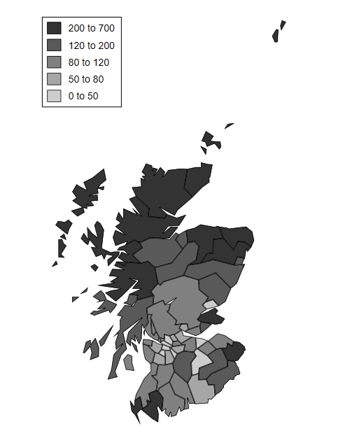
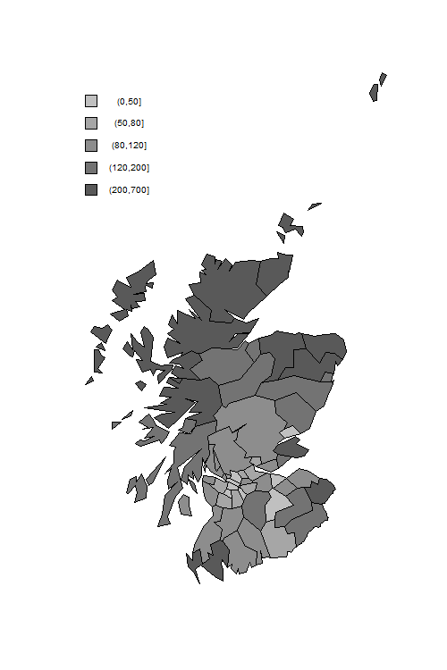

<h2 id="a-random-intercept-poisson-model">A Random-Intercept Poisson
Model</h2>
<p>Rabe-Hesketh and Skrondal (2012) analyze data on lip cancer in
Scotland. The data consists of the number of cancer cases observed in
each of 56 counties in Scotland in 1975-80.</p>
<p>We also have information on the expected number of cases in each
county, based on age-specific lip cancer rates for the whole of Scotland
and the observed age distribution in each county.</p>
<p>The ratio of observed to expected counts, often times 100, is called
the Standardized Mortality Ratio (SMR). For example a value of 193.2
denotes almost twice as many cases as expected.</p>
<p>A limitation of the SMR is that estimates for counties with small
populations are very imprecise. To address this problem we will use
Empirical Bayes (EB) estimates based on a random-intercept Poisson
model. over-dispersion.</p>

{% include srtabs.html %}

<p>We can read the data from the Stata bookstore and compute the offset
as the log of the expected counts</p>
<pre class='stata'>. use https://www.stata-press.com/data/mlmus3/lips.dta, clear

. gen os = log(e)
</pre>
<pre class='r'>> library(haven)
> lips &lt;- read_dta("https://www.stata-press.com/data/mlmus3/lips.dta")
> lips$os &lt;- log(lips$e)
</pre>
<p>We fit a random-intercept model at the county level and then produce
a Bayesian estimate of the Standardized Mortality Ratio (SMR) for each
county, combining the ML estimate of the mean with the posterior mean
(in Stata) or mode (in R) of the random effect. For county 1 the
posterior mean is 1.408 and the posterior mode is 1.456. <span
class="stata">(To obtain modes in Stata use
<code>predict pm, ebmodes</code>, take logs, and subtract the linear
predictor and offset.)</span></p>
<pre class='stata'>. mepoisson o, offset(os) || county:

Fitting fixed-effects model:

Iteration 0:   log likelihood = -347.28421  
Iteration 1:   log likelihood = -294.63904  
Iteration 2:   log likelihood = -294.35162  
Iteration 3:   log likelihood = -294.35155  
Iteration 4:   log likelihood = -294.35155  

Refining starting values:

Grid node 0:   log likelihood =  -183.5152

Fitting full model:

Iteration 0:   log likelihood =  -183.5152  
Iteration 1:   log likelihood =  -181.3855  
Iteration 2:   log likelihood = -181.32411  
Iteration 3:   log likelihood = -181.32325  
Iteration 4:   log likelihood = -181.32325  

Mixed-effects Poisson regression                Number of obs     =         56
Group variable: county                          Number of groups  =         56

                                                Obs per group:
                                                              min =          1
                                                              avg =        1.0
                                                              max =          1

Integration method: mvaghermite                 Integration pts.  =          7

                                                Wald chi2(0)      =          .
Log likelihood = -181.32325                     Prob > chi2       =          .
─────────────┬────────────────────────────────────────────────────────────────
           o │ Coefficient  Std. err.      z    P>|z|     [95% conf. interval]
─────────────┼────────────────────────────────────────────────────────────────
       _cons │   .0803235   .1165335     0.69   0.491     -.148078     .308725
          os │          1  (offset)
─────────────┼────────────────────────────────────────────────────────────────
county       │
   var(_cons)│   .5846534    .147734                      .3562963    .9593689
─────────────┴────────────────────────────────────────────────────────────────
LR test vs. Poisson model: chibar2(01) = 226.06       Prob >= chibar2 = 0.0000

. predict a, reffects
(calculating posterior means of random effects)
(using 7 quadrature points)

. gen eb = 100 * exp(_b[_cons] + a)
</pre>
<pre class='r'>> library(lme4) 
> library(dplyr)
> ri &lt;- glmer(o ~ offset(os) + (1 | county), nAGQ = 12, 
+   data = lips, family=poisson)
> a &lt;- ranef(ri)$county[,1]    
> lips &lt;- mutate(lips, a = a,  eb = 100 * exp(fixef(ri) + a))
</pre>
<p>The next task is to plot the empirical Bayes estimates of the
SMR.</p>
<p><span class="stata">An annotated do file to produce the map can be
obtained from the Stata bookstore, copied to your working directory, and
then run. The first thing the do file does is read the map polygons,
which will replace the dataset in memory.</span></p>
<pre class='stata'>. copy https://www.stata-press.com/data/mlmus3/scotmaps.do scotmaps.do, replace

. clear

. quietly  do scotmaps 

. graph export scotmap.png, width(500) replace 
file scotmap.png saved as PNG format
</pre>
<p></p>
<p><span class="r">We first download a file from the Stata bookstore
with the map polygons. We then prepare a canvas with the right
dimensions, draw the polygons for each county with a fill color to
reflect the SMR, and add a legend.</span></p>
<pre class='r'>> png("scotmapr.png", width=500, height=750)
> # map
> sm &lt;- read_dta("https://www.stata-press.com/data/mlmus3/scotmap.dta")
> plot(sm$lon, sm$lat, type = "n", axes = FALSE, xlab = "", ylab = "", asp = 1)
> counties &lt;- unique(sm$regid)
> colors &lt;- c("#595959","#737373", "#8d8d8d", "#a6a6a6","#c0c0c0")[5:1]
> smrg &lt;- cut(lips$eb, breaks=c(0,50,80,120,200,700))
> code &lt;- as.numeric(smrg)
> for(county in counties) {
+   cm &lt;- filter(sm, regid == county)
+   polygon(cm$lon, cm$lat, col = colors[code[county]])
+ }
> # legend
> delta &lt;- 15000
> vf &lt;- function(x, f) f(x[!is.na(x)])
> y0 &lt;- vf(sm$lat, max) - 2 * delta
> x0 &lt;- vf(sm$lon, min)
> for(i in 1:5) {
+   polygon( c(x0,x0+delta,x0+delta,x0), c(y0, y0,y0-delta, y0-delta), col=colors[i])
+   text(x0 + 4 * delta, y0 - delta/2, levels(smrg)[i], cex=0.8)
+   y0 &lt;- y0 - 2 * delta
+ }
> dev.off()
null device 
          1 
</pre>
<p></p>
<p>The incidence of lip cancer is higher in coastal places, particularly
in the north.</p>
<p>You may also want to plot the EB estimates versus the observed SMRs.
You will see the usual shrinkage towards the mean, which is about
145.</p>
<p>Last updated 3 September 2019</p>
